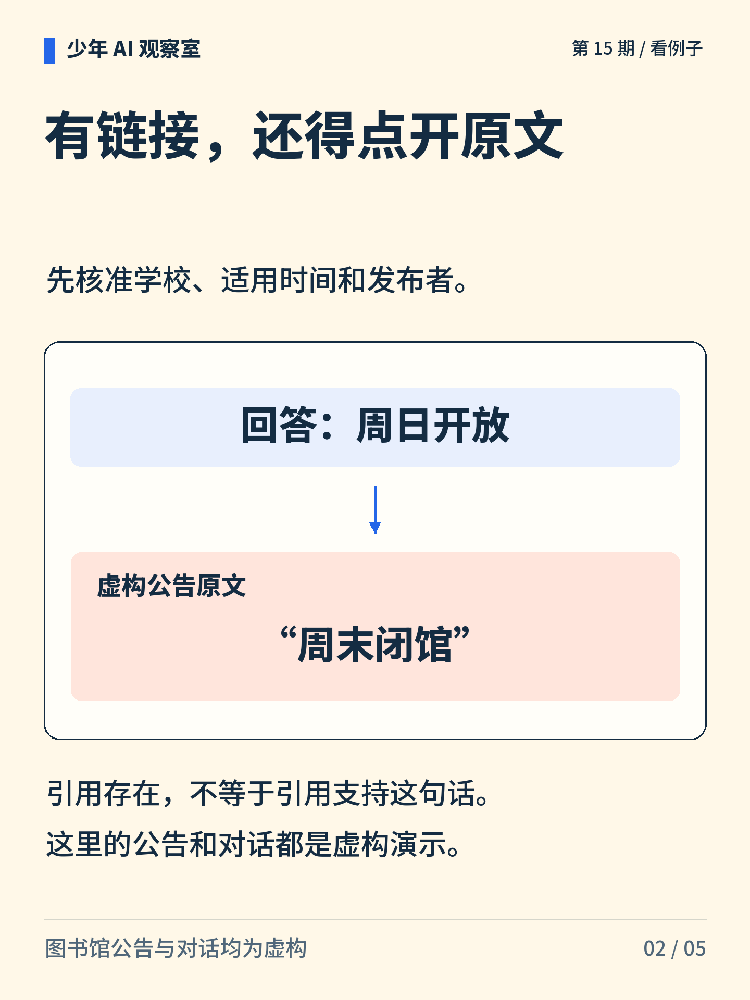
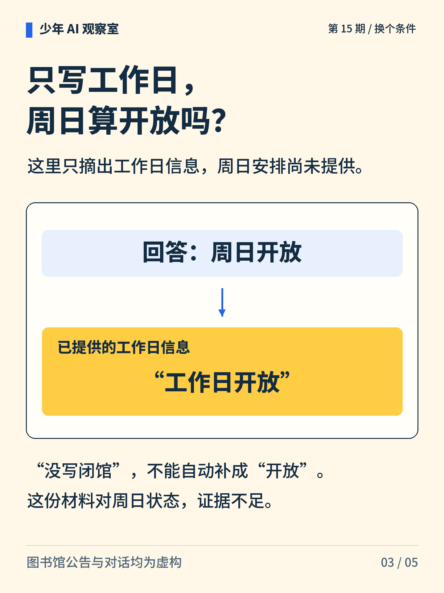
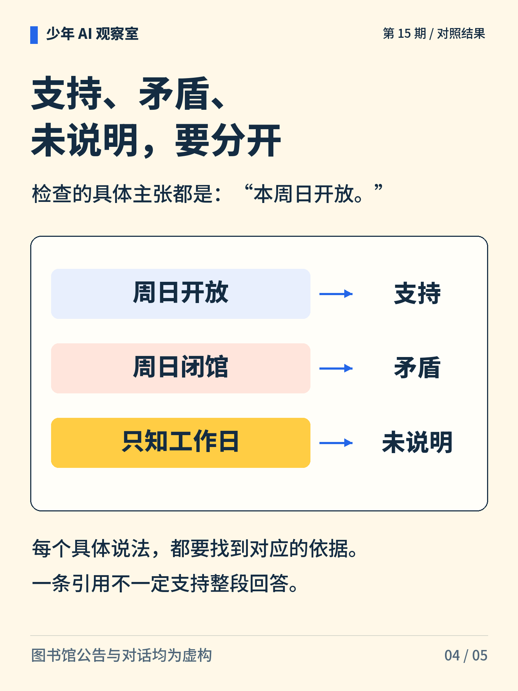
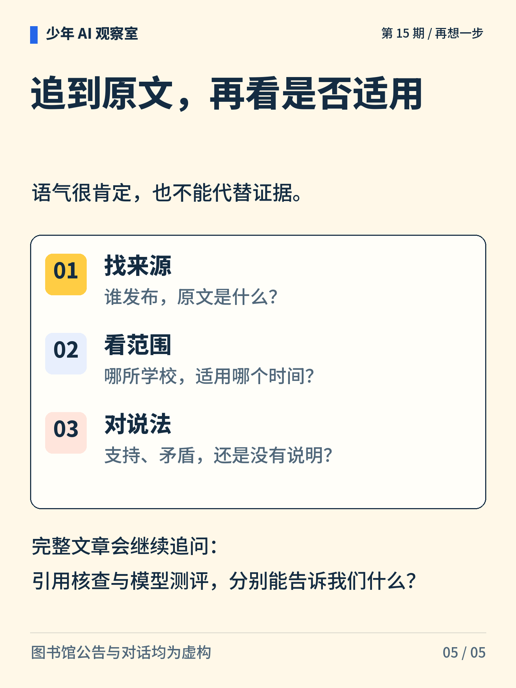

少年 AI 观察室 · 第 15 期
答案带着链接，就一定可信吗？
AI 说“周日开放”，还给了公告。打开以后，原文却写“周末闭馆”。链接究竟证明了什么？

图解文字
回答附上链接，读者再用原文核查，提示链接本身不能担保结论。

图解文字
回答称周日开放，同一范围的公告却写周末闭馆，两者矛盾。

图解文字
只提供工作日开放的信息，未交代周日，不能据此确认周日开放。

图解文字
针对“本周日开放”这项主张：适用公告写周日开放为支持，写周日闭馆为矛盾，只知工作日为未说明。

图解文字
追到发布者与原文，核准学校和适用时间，再逐条比对说法。
想一想
公告没提到周日，可以当作“周日开放”的证据吗？
展开参考思路
不能。只知道工作日开放，还不足以判断周日。应查找适用于这所学校、这个时间的周日安排；“没有写闭馆”不能替代“明确支持开放”。
引用要支持具体说法，还要核对它的适用范围。
公告与对话均为虚构。第二种情况只给出工作日信息，不能把摘录当成完整开放安排。支持、矛盾或未说明的判断，都以学校和时间范围匹配为前提。
正文首图为 AI 辅助生成的概念插画；第 2—5 张图按核对过的文字与规则绘制。
延伸阅读资料
文中算例与图解用于说明原理，不是实际模型的测评结果。研究结论对应以下资料。〔1〕 Gao、Yen、Yu、Chen，2023，Enabling Large Language Models to Generate Text with Citations，EMNLP。arXiv:2305.14627。
https://arxiv.org/abs/2305.14627
〔2〕 Guo 等，2017，On Calibration of Modern Neural Networks，ICML，PMLR 70:1321–1330。
https://proceedings.mlr.press/v70/guo17a.html
〔3〕 UNESCO，2024，AI Competency Framework for Students。DOI:10.54675/JKJB9835。作为批判判断、隐私与责任的背景参考。
https://www.unesco.org/en/articles/ai-competency-framework-students
书目信息沿用原稿，本轮未重新核验外部网页的可访问性。